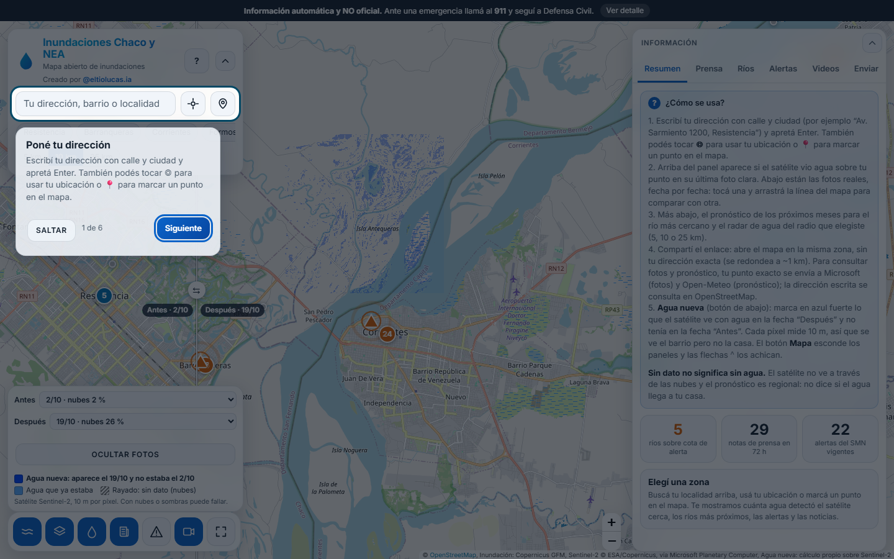
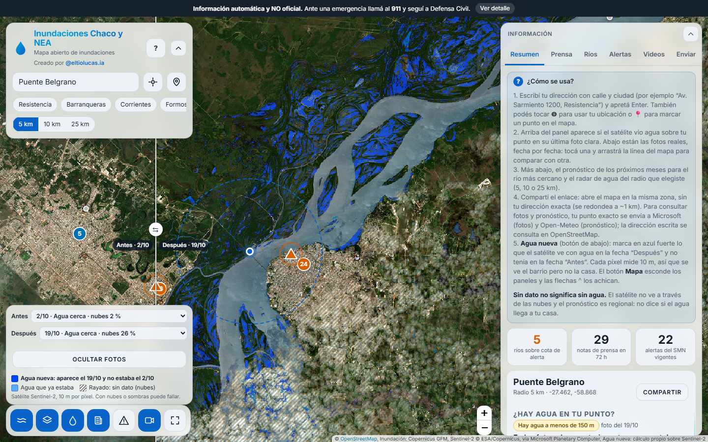
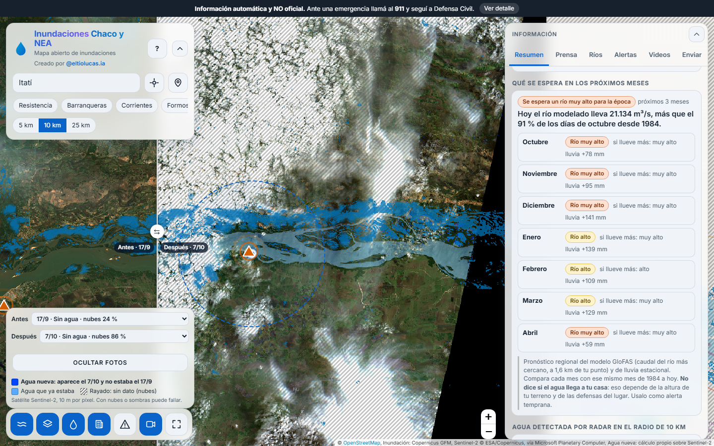
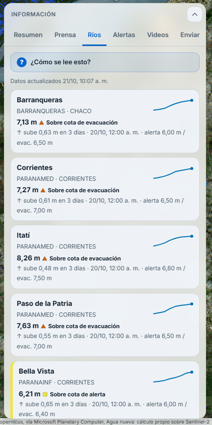
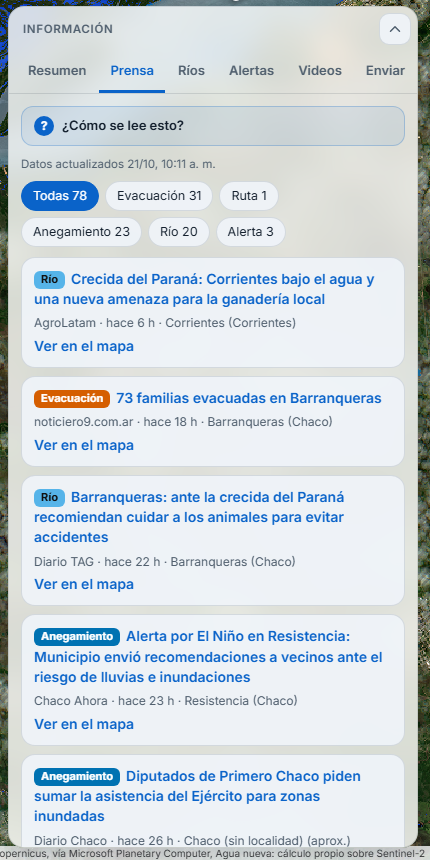
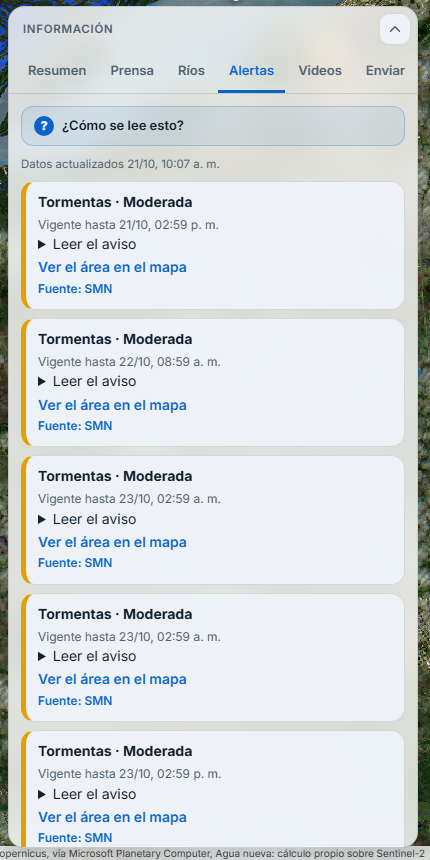
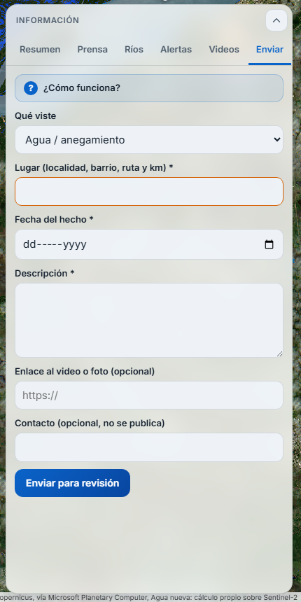
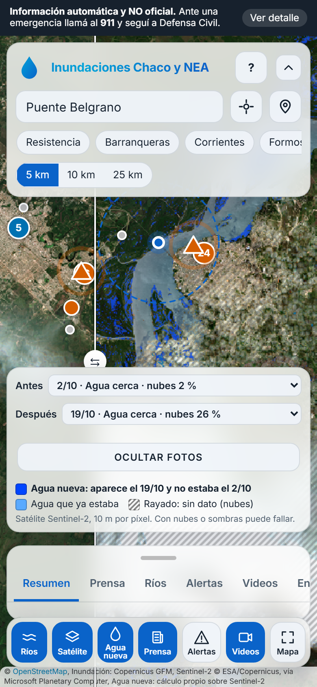

Un sitio web público que responde una pregunta: dónde hay agua hoy comparado con una fecha anterior. Muestra dos fotos satelitales Sentinel-2 de la misma zona, separadas por una barra deslizable, y pinta de azul fuerte los píxeles que eran tierra en la fecha anterior y son agua en la posterior. Alrededor de esa función central suma un pronóstico mensual del río, las alturas del INA contra su cota de alerta, los avisos del Servicio Meteorológico Nacional, noticias de prensa ubicadas por localidad y videos con su fecha. Funciona en el navegador, en computadora o celular, sin registro.
Está pensado para vecinos que quieren saber si su barrio está bajo agua, para municipios y Defensa Civil que priorizan recursos, y para medios que necesitan un mapa con fuentes y fechas visibles.
Al abrir el sitio aparece un recorrido guiado de seis pasos, cada vez que se entra, que se cierra con «Saltar» o la tecla Escape. El mapa arranca ya en modo comparación sobre el Chaco, con la capa de alertas del SMN apagada para que no tape la imagen. Las atribuciones de las fuentes quedan en el borde inferior, fuera del área útil.

El navegador toma las dos fotos elegidas (por defecto la más reciente con pocas nubes y una anterior), calcula en cada píxel el índice de agua NDWI con las bandas verde e infrarroja cercana, y marca en azul fuerte el agua que apareció entre ambas fechas. El agua que ya estaba se ve en celeste y las zonas sin dato por nubes, con rayado gris. La marca solo se dibuja del lado «Después» de la barra.
La Figura 2 muestra el Paraná frente a Corrientes y Resistencia, con el puente General Belgrano al centro: el azul fuerte aparece en las islas y bajos de la margen chaqueña entre el 2 y el 19 de octubre. La leyenda y el selector de fechas están en el panel inferior izquierdo.

Al escribir una dirección y apretar Enter, el panel responde si hay agua sobre ese punto según la última foto clara, lista las fotos de los últimos 75 días con su porcentaje de nubes y avisa si el estado cambió. Debajo, una tabla de los próximos siete meses compara el caudal pronosticado del río más cercano con ese mismo mes del calendario desde 1984 («bajo», «normal», «alto», «muy alto»). El sitio informa a cuántos kilómetros está el cauce modelado y avisa cuando supera los 10. El pronóstico es regional: no incluye relieve ni defensas, así que no dice si el agua llega a una casa.

Ríos lista las estaciones del INA con su altura, su diferencia con la cota de alerta y una tendencia; las que no tienen cota publicada se muestran en gris. Prensa reúne titulares de Google Noticias y medios locales ubicados por palabras clave, con medio, antigüedad y enlace a la fuente. Alertas muestra los avisos vigentes del SMN. Videos muestra solo material revisado por una persona, con fecha de publicación y enlace; hoy la lista está vacía a propósito. Enviar es un formulario donde cualquiera informa agua, un camino cortado o un video, y nada se publica sin aprobación de un moderador.




En pantallas angostas el panel pasa a una hoja inferior deslizable. El aviso «Información automática y NO oficial. Ante una emergencia llamá al 911 y seguí a Defensa Civil» ocupa una franja fija arriba, y el aviso «Antes de usar este mapa» detalla fuentes y límites.

| Dato | Fuente | Condición |
|---|---|---|
| Fotos y agua nueva | Sentinel-2 L2A (ESA, Copernicus) vía Microsoft Planetary Computer, sin clave | Datos abiertos. Servicio de terceros sin garantía de disponibilidad |
| Agua por radar | Copernicus Global Flood Monitoring (EODC) | Datos abiertos. Pierde agua bajo vegetación y en zonas urbanas |
| Pronóstico | Open-Meteo: Flood API (GloFAS v4) y Seasonal API | Gratis para uso no comercial |
| Alturas de ríos | INA | Sin licencia declarada |
| Alertas | Servicio Meteorológico Nacional | CC BY 4.0 |
| Prensa | Google Noticias y RSS de medios locales | Solo titulares y enlace a la fuente original |
| Direcciones | Archivo propio de 123 localidades, Georef (datos.gob.ar), Nominatim (OpenStreetMap) | Con atribución |
| Mapa base | OpenStreetMap | Política de uso de OSM, no apta para tráfico alto |
Los mapas de crecidas de CONAE no se integran: la página pública tiene dos imágenes de 2015 y 2016 y ninguna API. Los mapas de una emergencia se piden a CONAE o a la Carta Internacional sobre Espacio y Grandes Catástrofes.
| Contenido | Tratamiento |
|---|---|
| Satélite, ríos y alertas | Automático, con fecha y hora de cada capa. Pasadas 12 horas sin actualizar se marca «DATO VIEJO». |
| Prensa | Publicación automática con aviso permanente de que no está verificada. |
| Videos y reportes | Solo después de revisión humana. Los reportes de usuarios quedan en una cola de moderación. |
| Tema | Estado |
|---|---|
| Pruebas | Probado en computadora y en celular emulado. No se probó en celulares reales de gama baja ni con conexión 3G. La capa de agua nueva pide muchos mosaicos y el servicio de terceros rechaza peticiones cuando se mueve el mapa muy rápido. |
| Validación | El cálculo de agua nueva no se comparó con el mapa de una inundación real. Es el pendiente principal. |
| Videos | Lista vacía. Requiere una persona que revise y cargue. |
| Aspectos legales | El aviso legal no tuvo revisión jurídica. Los términos de uso de Planetary Computer, Open-Meteo y OpenStreetMap con tráfico alto no se consultaron. |
| Cobertura | Hay datos entre 29,1° y 23,9° de latitud sur y entre 62,9° y 57,2° de longitud oeste. |
| Próximos pasos | El archivo investigacion/10-plan-de-mejora.md del repositorio los detalla: cambio por radar Sentinel-1, enlaces públicos a fotos y videos con fecha ubicados en el mapa, calibración del umbral y validación. |
El código completo, la documentación de instalación y los documentos de investigación están en github.com/LucassToledo/mapa-inundaciones-nea. Autor: Lucas Toledo, @eltiolucas.ia.
Las capturas corresponden a los datos del 21 de octubre de 2026 y cambian con cada actualización.